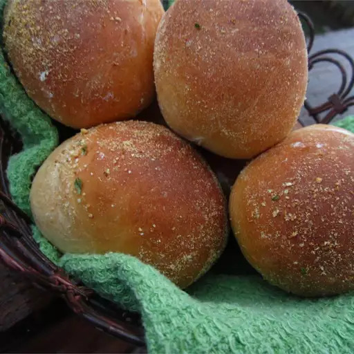

Pandesal

Description
Pandesal is a Filipino bread, the most popular bread in the Philippines.
It's often consumed for breakfast with coffee or hot chocolate.
People prefer warm pandesal because it is often soft and more enjoyable to eat.
Ingredients
- 1 ½ cups warm milk
- ¾ cup white sugar, divided
- 1 (.25-ounce) package active dry yeast
- 4 cups bread flour
- 2 teaspoons salt
- ¼ cup vegetable oil
- 1 cup bread crumbs
Steps
- Combine milk, 2 teaspoons sugar, and yeast in a large bowl;
stir until sugar and yeast are fully dissolved, about 5 minutes.
- Mix remaining sugar, flour, and salt together in a large bowl.
Pour in milk mixture and vegetable oil. Mix until dough comes together.
- Turn dough out onto a flat work surface. Knead until smooth.
Shape into a ball and return to the bowl. Cover with a damp cloth
and let rise until doubled, at least 1 hour.
- Divide dough into 4 equal portions using a bench knife.
Roll each portion into a log; slice diagonally into 1-inch pieces.
- Pour bread crumbs onto a large plate. Roll each piece of dough in bread crumbs and
place on a baking sheet lined with parchment paper. Let rise until puffy, 30 to 45 minutes.
- Preheat the oven to 375 degrees F (190 degrees C).
- Bake in the preheated oven until golden brown, 15 to 20 minutes.
Return to Main Page